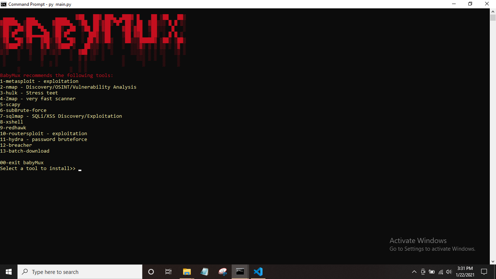

Termux is an Android app that provides a Linux-like environment on your device, allowing you to run text-based programs and scripts, install and manage Linux packages, and more. Linux packages, and more.
Termux Tools;
Web vulnerabilities(ثغرات المواقع)
RED_HAWK: Discovering website vulnerabilities.
Metasploit(...إختبار الإختراق)
Metasploit Framework: is an open-source framework used for penetration testing and exploiting vulnerabilities in systems and applications.
Tool-x(أدوات كثيرة داخل أداة واحدة)
Tool-x: An arsenal of 70 diverse tools categorized into several different sections.
Phishing(التصيد الإحتيالي)
V7x-Fishing2: is a deceptive tactic using emails, texts, or fake websites to trick individuals into sharing sensitive information or downloading malware.
BybyMux(أدوات لينكس على تيرمكس)
pentesting tool for noob hackers,Runs on linux and termux.

KaliNethunter(نضام مبني على لينكس)
Kali NetHunter is a Linux distribution designed for security testing on smartphones, based on Kali Linux and containing a suite of penetration testing and security analysis tools.
To install Kali NetHunter on Termux, you need to execute the following commands: